Features
Everything Trax can do, sorted by when you use it.
When you lay the track
The track layer records the route and the items.
- Track ageA countdown on the lock screen, and an alert five minutes before the track is ready.
- Metres between itemsSee how far it is since the last item while you lay the track.
- Cross tracksLay a fresher track across it, with an alert before the crossing.
- IGP levels and templatePick a level from IGP-V to FH 3, see your steps against the requirement and lay the track by a template on the map.
- Blood tracksWound beds, blood stops, game and flight direction, with their own buttons while laying.
- Track plans iPhoneDraw the track on the map at home and lay it by the plan outdoors.
- Hold to stopThe track never ends by accident.
While your dog is tracking
The handler follows the dog with the phone in a pocket.
- Voice alertsHear it when you get close to an item.
- Off trackThe phone vibrates when you leave the track.
- Automatic findsThe item is marked as found when you reach it.
- Blind tracksThe track and the alerts stay hidden until you stop.
- IndicationDown, sit, stand, retrieve or past, with one tap after “Found”.
- Night modeRed light on the screen, with the track and your position easy to see.
- Article and area searchMark a field on the map and search for items or people, with a time limit and its own statistics.
Afterwards
See what happened, and how your dog is progressing.
- Track detailA large map with playback, and tabs for overview, deviation, items and conditions.
- The dog pageKey figures, goals, training elements and the progress of each dog.
- Track assessmentGive a rating, a difficulty and a learning point after each track.
- Training elementsCreate your own, like “Sharp angle”, and rate them after the track.
- Wind and weatherA wind arrow on the map and the weather when your dog starts the track.
- Edit tracksTrim the start and end of a track afterwards, and correct finds later.
Sharing and your data
No account. Your tracks stay on your phone.
- Send the track to the handlerSend the track by AirDrop or email, and it opens straight in Trax on the other phone.
- Send tracks blindThe receiver only sees the start until the track has been run.
- Share with a photo of your dogTrax puts the track, the items and the numbers on top of a photo from your library.
- Several tracks in one PDFExport many tracks together, for example for your own records.
- BackupAn automatic copy of all tracks and dogs in iCloud Drive.
- Choose your languageEnglish, Norwegian, Swedish or German, whatever language your phone uses.
Share the track with a photo of your dog
Pick a photo from your library, and Trax puts the track, the items and the numbers on top. Share it as a story or a post, and choose the colours of the track yourself. If you would rather show just the track, you get it on a green background.

Send the track to the handler
The track layer and the handler don’t need to use the same phone. Tap “To another Trax user” and send the track by AirDrop or email. It opens straight in Trax on the other phone, ready to start. No account and no sign-in.
Use AirDrop or email, not Messages. If the message is sent as an SMS, the file doesn’t arrive.
Screenshots
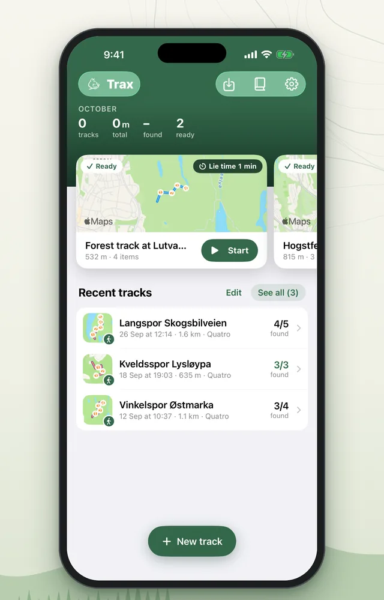
Everything in one placeThis month's numbers, tracks ready to start and your latest tracks. 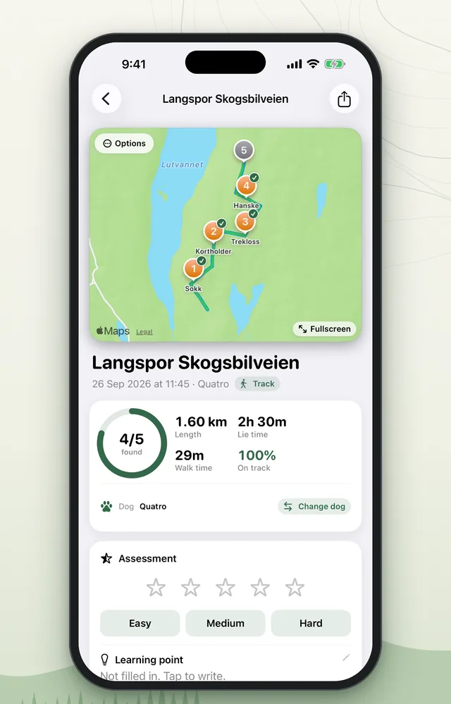
The whole track on one cardMap, items found, length, lie time and how much of the track your dog followed. 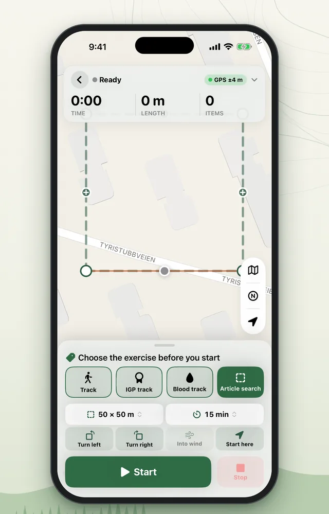
Choose the exerciseTrack, IGP track, blood track or article search. Draw the field on the map and set a time limit. 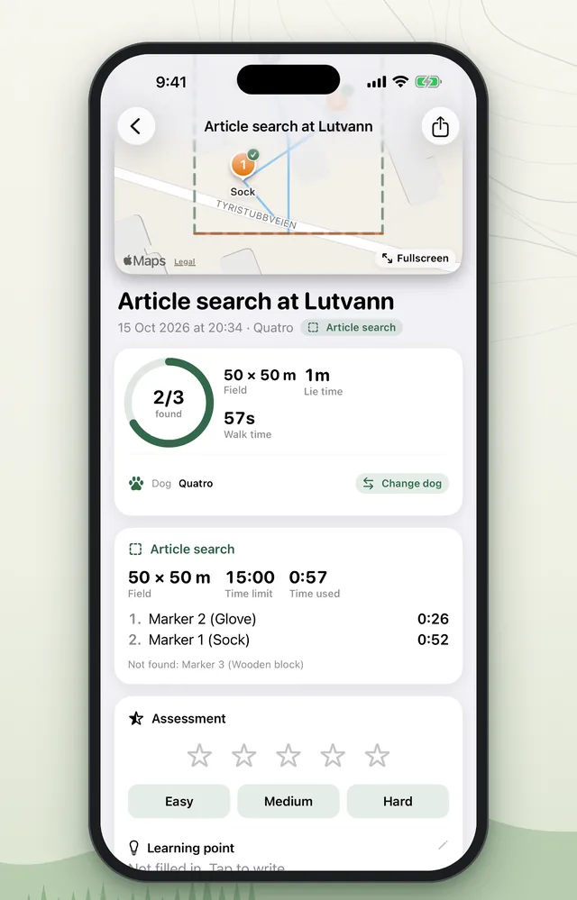
Article search and area searchSee which items your dog found and how long each find took. 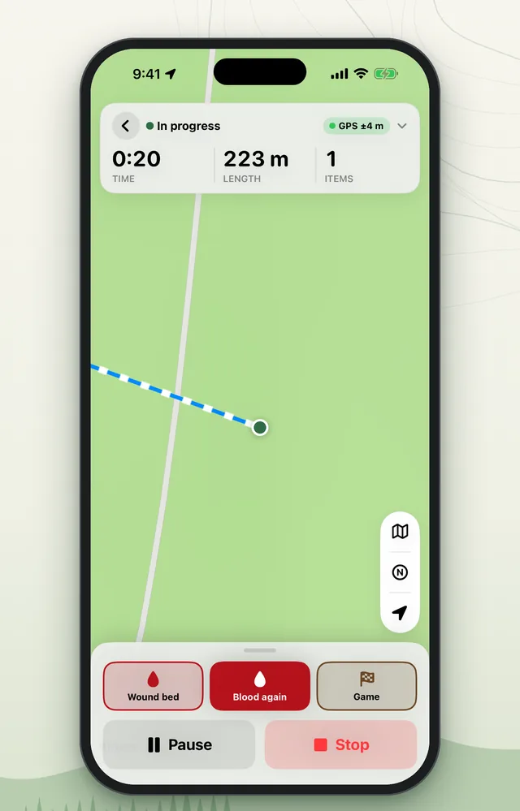
Blood trackingMark the wound bed, more blood and the game with one tap as you work through the track. 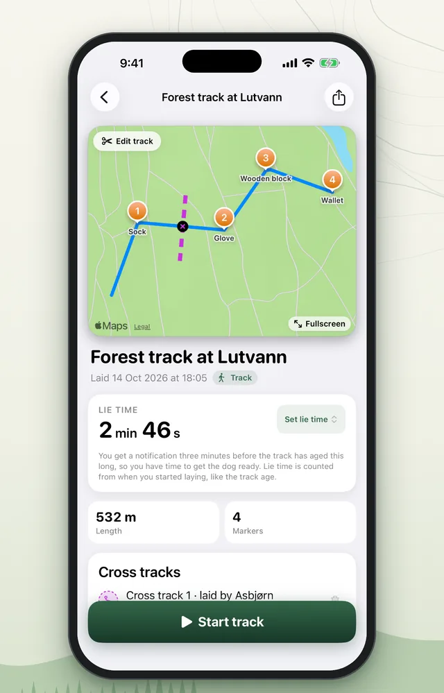
Cross tracksLay a fresher track across the first, and watch the lie time count down before you start. 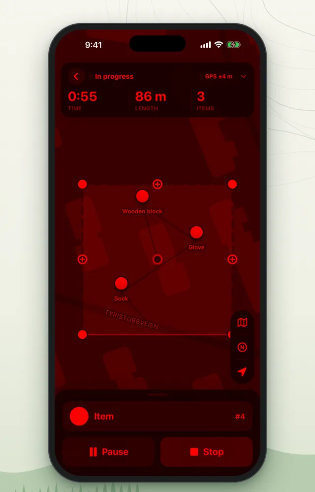
Night modeRed light on the screen when you train in the dark.
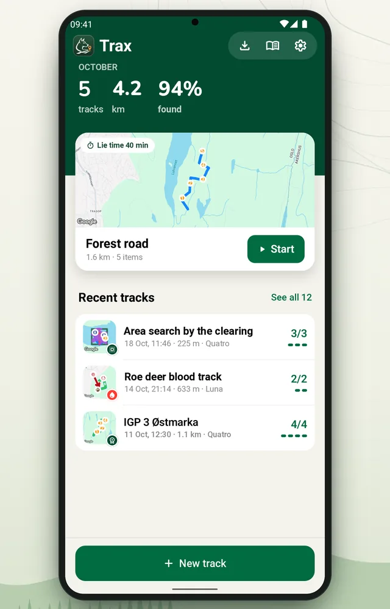
Everything in one placeThis month's numbers, tracks ready to start and your latest tracks. 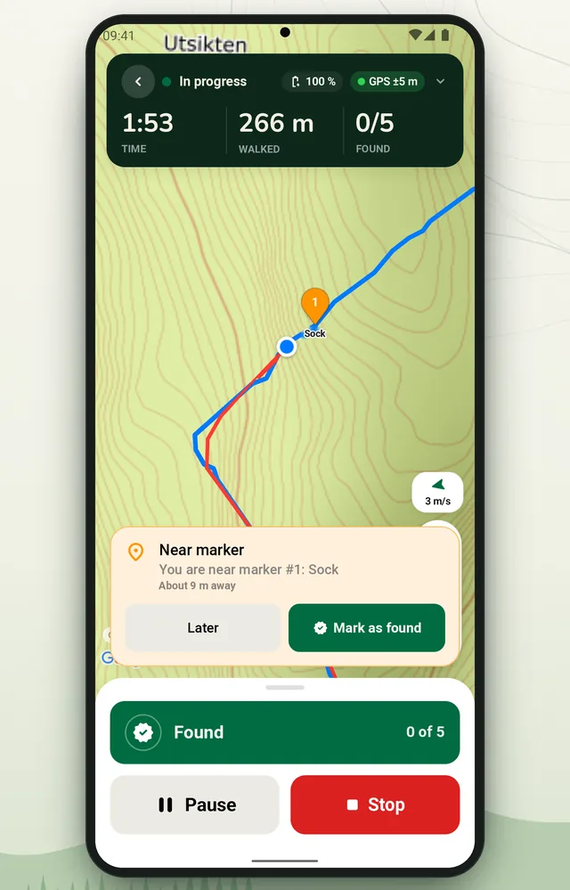
Log finds as you goTrax tells you when you get close to an item. One tap and the find is logged. 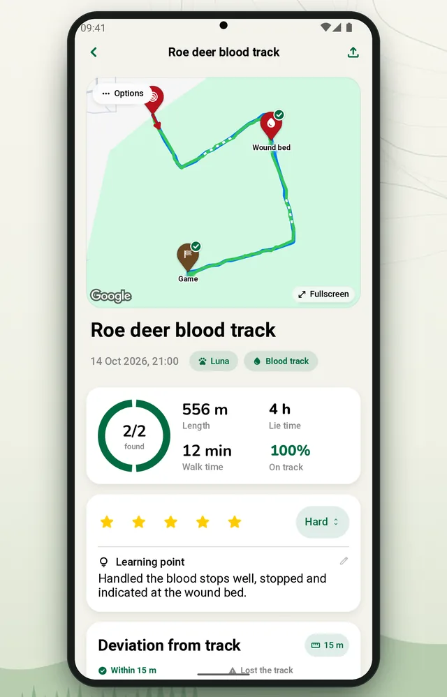
The whole track on one cardMap, items found, length, lie time and how much of the track your dog followed. 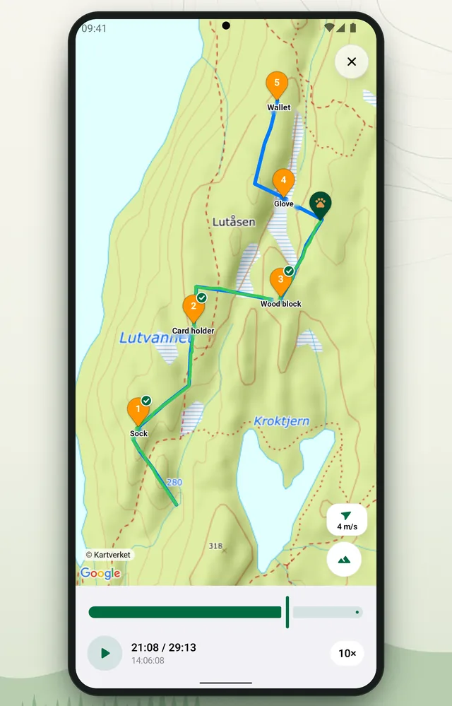
Replay the trackSee the laid track and your dog's route side by side, at up to 10x speed. 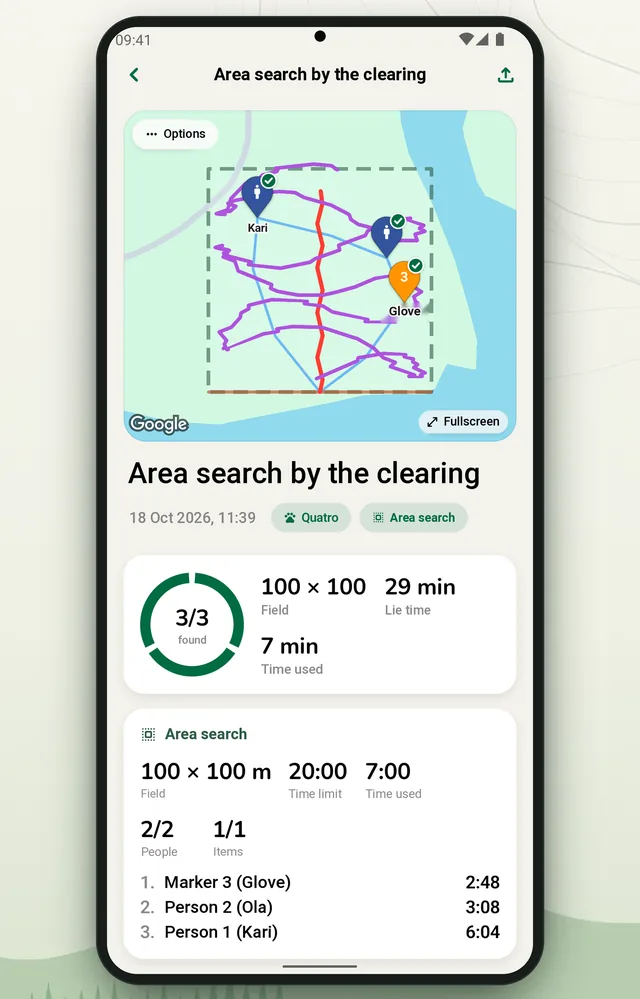
Article search and area searchSee which items and people your dog found, and the time to each find. 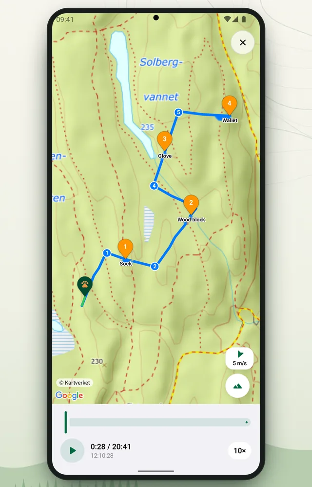
IGP tracks with cornersNumbered corners and articles, with your dog's route on top of the laid track. 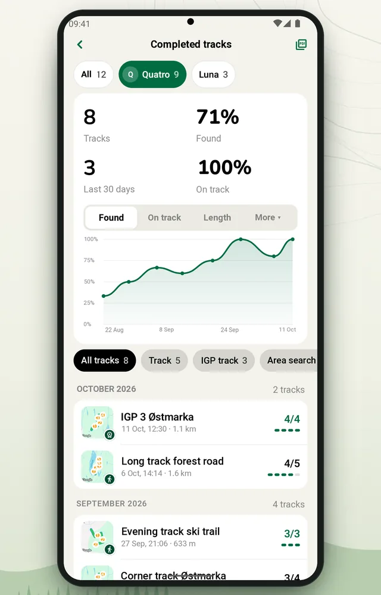
Follow the progressFinds, how well your dog held the track and length over time, for each dog. 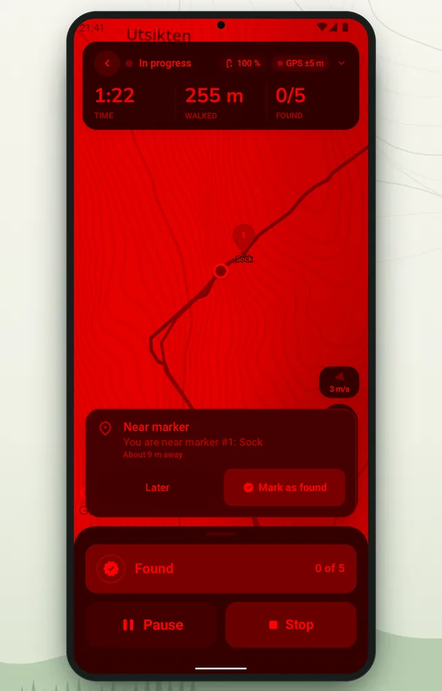
Night modeRed light on the screen when you train in the dark.